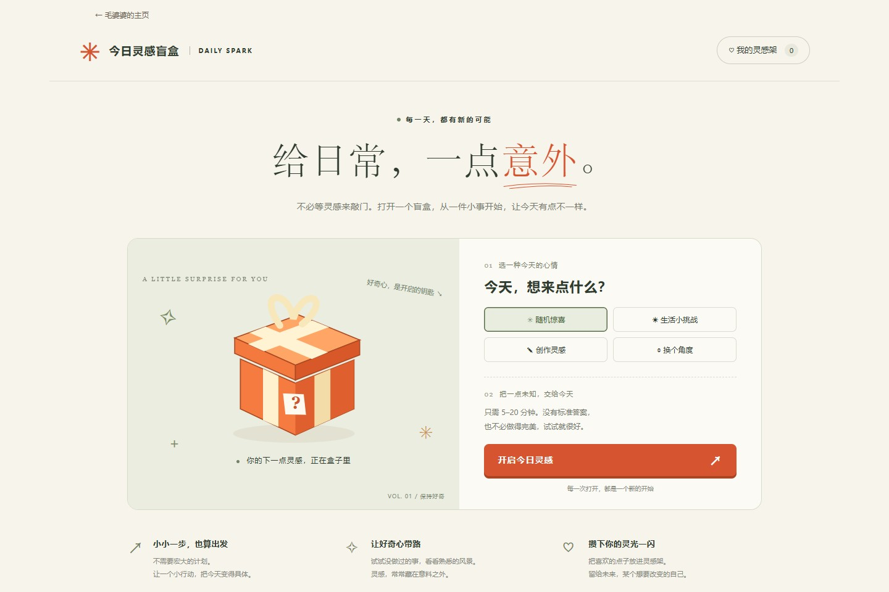
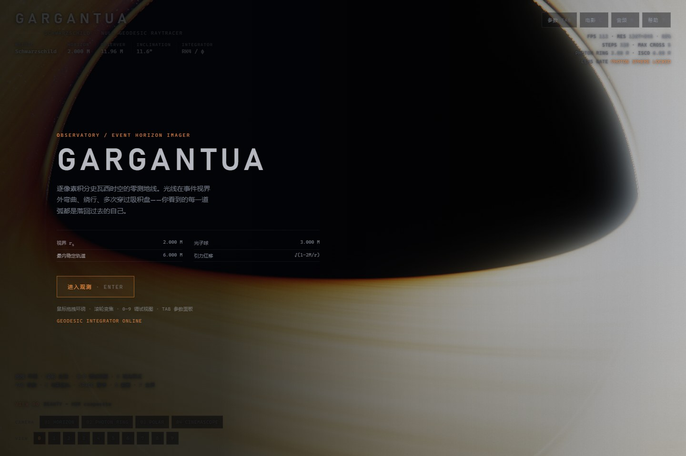
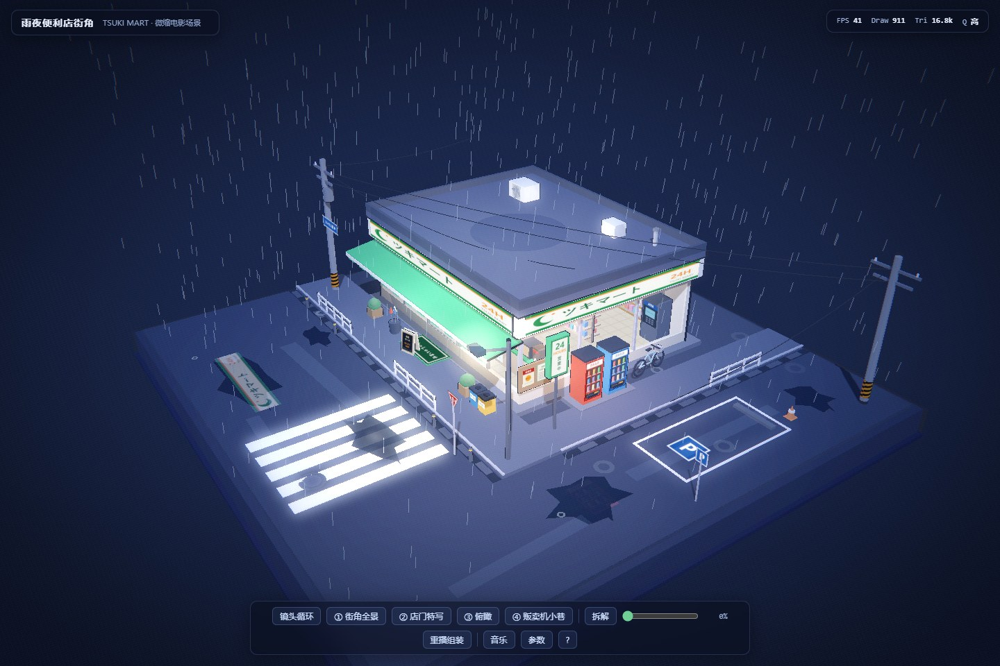

动态视觉实验室

十五种动态视觉，五个精选实验。拖动、切换，亲手感受网页交互的可能。
转动灵感，走进交互的另一面。
▶ 体验作品我提出想法、选择体验方向，借助 AI 辅助实现，在尝试中迭代。以下是已插入的四盘卡带，选一盘开始。▼
十五种动态视觉，五个精选实验。拖动、切换，亲手感受网页交互的可能。
转动灵感，走进交互的另一面。
▶ 体验作品
抽取一份小挑战、一个新视角。收藏喜欢的灵感，从一个小行动开始。
给平凡的一天，开一点新鲜感。
▶ 打开盲盒
史瓦西黑洞光线追踪：吸积盘、引力透镜、事件视界，全部实时算出来。
「不要温和地走进那个良夜。」——凑近一点，光会弯。
▶ 靠近视界
电影版雨夜街角：霓虹、雨丝、湿地反光，镜头随便拉，参数随便拧。
凌晨两点，关东煮和霓虹都还亮着。
▶ 走进雨夜